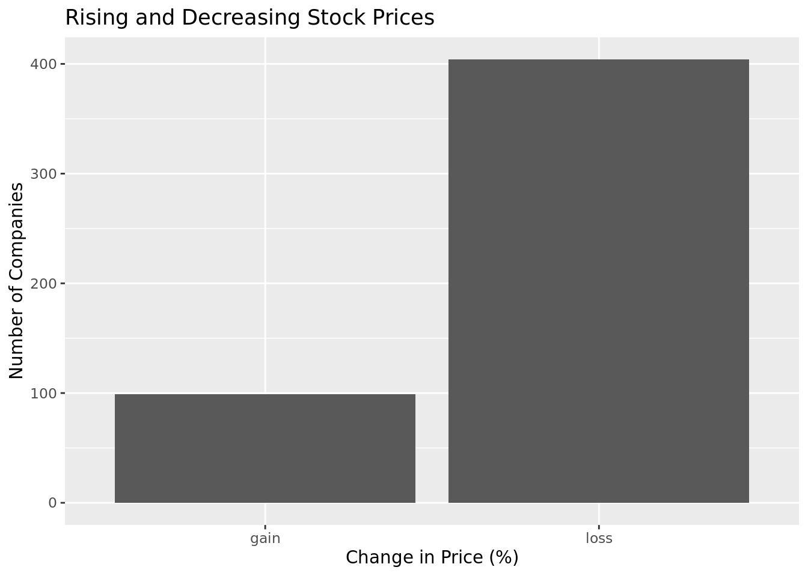
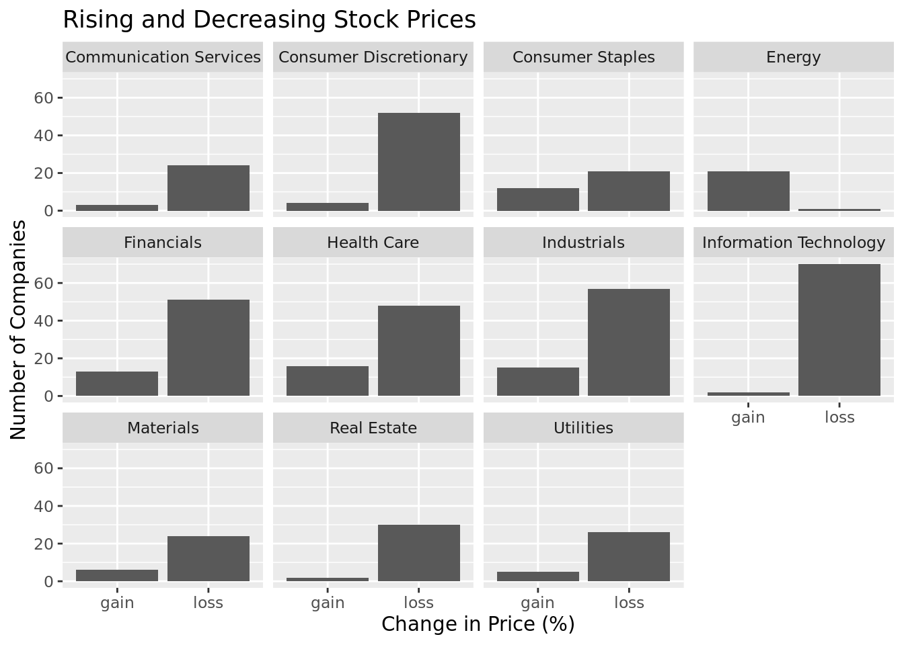
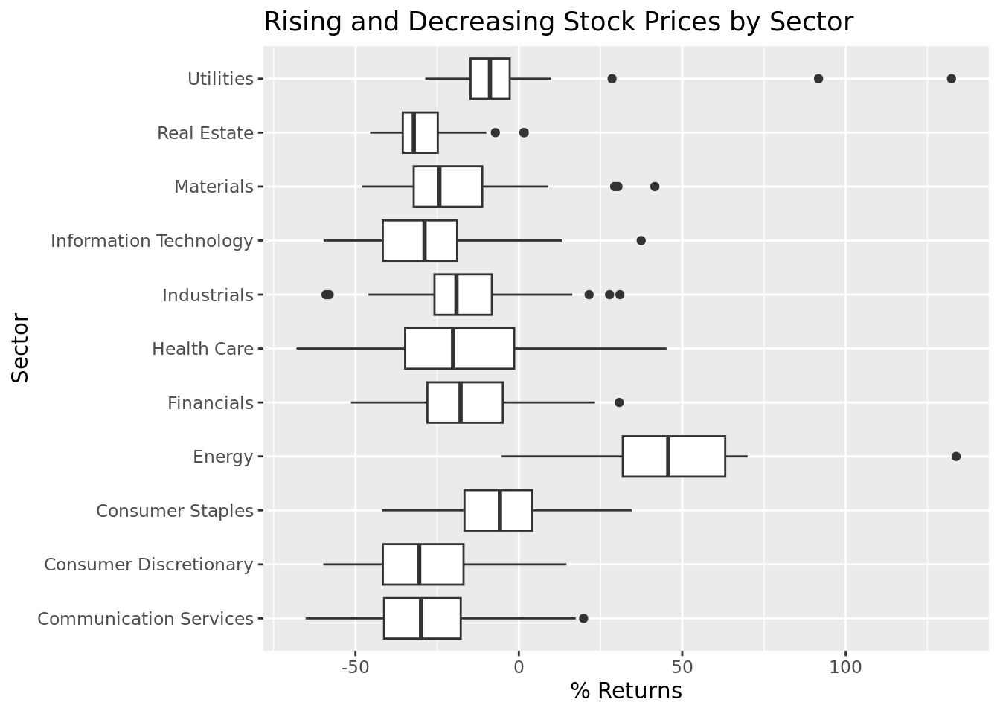

library(tidyverse)Analyzing the Impacts of Inflation and Interest Rates on the Stock Market
Project Proposal
Data 1
Introduction and data
Data set 1 comes from 4 sources. The data on the federal-funds rate and inflation rate were obtained from Macrotrends (https://www.macrotrends.net/2015/fed-funds-rate-historical-chart), the data on S&P 500 yearly total returns was obtained from Slickcharts (https://www.slickcharts.com/sp500/returns), and the data for monthly statistics was obtained Official Data (https://www.officialdata.org/us/stocks/s-p-500/1900). The data was collected by retrieving the data publicly published on the stock-market exchange. Each observation represents a different month in a given year. For each month, we’ve compiled the return on investment, as well as the the cumulative value of $100 invested in January of 1900; for each year, we’ve compiled the mean federal-funds rate, inflation rate, YTD returns, and annual change in inflation, all of which are included in historical_data. While the data shows heavy fluctuations, we see that federal funds and inflation rate both peaked around 1980. No ethical concerns.
Research question
With data set 1, we would like to answer the following question: How have interest rates and inflation rates historically impacted the stock market? Tracking historical trends can be useful in maximizing profit from the bullish or bearish market, making it significant for investors or fin-tech workers. Our data assesses the impact of quantitative variables such as interest rate and inflation rate. It also assesses categorical variables such as time and whether or not interest rate and inflation rate rose or fell (TRUE if they rose, FALSE if they fell). Our hypothesis is that the stock market (generalized by the S&P 500 index) would be hurt by high inflation and corresponding high interest rates (generalized by the federal-funds rate) because consumers’ discretionary incomes drop and companies are disincentivized from borrowing due to the higher costs associated with taking out a loan.
Glimpse of data
# market_by_month was scraped from https://www.officialdata.org/us/stocks/s-p-500/1900
fed_funds_rate <- read_csv("data/fed-funds-rate-historical-chart.csv")
inflation_rate <- read_csv("data/united-states-inflation-rate-cpi.csv")
sp500_year <- read_csv("data/history.csv")
market_by_month <- read_csv("data/market_by_month.csv")
glimpse(fed_funds_rate)Rows: 24,473
Columns: 1
$ `Macrotrends Data Download` <chr> "Federal Funds Rate - 62 Year Historical C…glimpse(inflation_rate)Rows: 71
Columns: 1
$ `Macrotrends Data Download` <chr> "U.S. Inflation Rate 1960-2022", "DISCLAIM…glimpse(sp500_year)Rows: 95
Columns: 2
$ `2021` <dbl> 2020, 2019, 2018, 2017, 2016, 2015, 2014, 2013, 2012, 2011, 20…
$ `28.71` <dbl> 18.40, 31.49, -4.38, 21.83, 11.96, 1.38, 13.69, 32.39, 16.00, …glimpse(market_by_month)Rows: 1,473
Columns: 4
$ year <dbl> 1900, 1900, 1900, 1900, 1900, 1900, 1900, 1900, 1900…
$ month <dbl> 1, 2, 3, 4, 5, 6, 7, 8, 9, 10, 11, 12, 1, 2, 3, 4, 5…
$ monthly_return <chr> "2.10%", "1.11%", "1.59%", "-4.42%", "-2.64%", "0.36…
$ monthly_avg_price <dbl> 102.10, 103.23, 104.87, 100.24, 97.59, 97.95, 99.65,…#|: fixing-and-combining-data-sets-for-year
names(fed_funds_rate)[1] <- "day"
names(inflation_rate)[1] <- "year"
fed_funds_rate <- fed_funds_rate |>
slice(9:nrow(fed_funds_rate)) |>
separate(day, into = c("day", "fed_funds_rate"), sep = ",")
fed_funds_rate <- fed_funds_rate |>
mutate(day = substring(day, 1, 4))|>
rename(year = day) |>
group_by(year) |>
summarize(mean_fed_funds_rate = mean(as.numeric(fed_funds_rate)))
inflation_rate <- inflation_rate |>
slice(11:nrow(inflation_rate)) |>
separate(year, into = c("year", "inflation_rate", "inflation_annual_change"), sep = ",")
inflation_rate <- na.omit(inflation_rate)
inflation_rate<- inflation_rate |>
mutate(year = substring(year, 1, 4))
colnames(sp500_year) <- c("year","year_to_date_return")
sp500_year <- sp500_year|> mutate(year = as.character(year))
historical_data <- inner_join(inflation_rate, fed_funds_rate, by = "year")
historical_data <- inner_join(historical_data, sp500_year, by = "year")
historical_data <- historical_data |>
mutate(
mean_fed_funds_rate = round(mean_fed_funds_rate * 100) / 100,
time_period = if_else(year > 1990, "recent", "not so recent"),
year_character = as.character(year),
decade = case_when(
str_detect(year_character, "196") ~ "'60s",
str_detect(year_character, "197") ~ "'70s",
str_detect(year_character, "198") ~ "'80s",
str_detect(year_character, "199") ~ "'90s",
str_detect(year_character, "197") ~ "'70s",
str_detect(year_character, "198") ~ "'80s",
str_detect(year_character, "199") ~ "'90s",
str_detect(year_character, "200") ~ "2000s",
str_detect(year_character, "201") ~ "2010s",
str_detect(year_character, "202") ~ "2020",
)
) |>
select(
year, inflation_rate, inflation_annual_change,
mean_fed_funds_rate, year_to_date_return, time_period, decade
)
glimpse(historical_data)Rows: 60
Columns: 7
$ year <chr> "1961", "1962", "1963", "1964", "1965", "1966"…
$ inflation_rate <chr> "1.0707", "1.1988", "1.2397", "1.2789", "1.585…
$ inflation_annual_change <chr> "-0.39", "0.13", "0.04", "0.04", "0.31", "1.43…
$ mean_fed_funds_rate <dbl> 1.95, 2.71, 3.18, 3.50, 4.08, 5.11, 4.22, 5.66…
$ year_to_date_return <dbl> 26.89, -8.73, 22.80, 16.48, 12.45, -10.06, 23.…
$ time_period <chr> "not so recent", "not so recent", "not so rece…
$ decade <chr> "'60s", "'60s", "'60s", "'60s", "'60s", "'60s"…#|: combining-data-sets-for-month
market_by_month <- market_by_month |>
mutate(
year = as.character(year)
)
historical_data <- historical_data |>
left_join(market_by_month, by = "year")
historical_data <- historical_data |>
relocate(
year, month, monthly_return, monthly_avg_price
)
glimpse(historical_data)Rows: 720
Columns: 10
$ year <chr> "1961", "1961", "1961", "1961", "1961", "1961"…
$ month <dbl> 1, 2, 3, 4, 5, 6, 7, 8, 9, 10, 11, 12, 1, 2, 3…
$ monthly_return <chr> "4.37%", "3.40%", "2.92%", "1.26%", "-1.08%", …
$ monthly_avg_price <dbl> 25134.18, 25988.00, 26746.59, 27084.50, 26791.…
$ inflation_rate <chr> "1.0707", "1.0707", "1.0707", "1.0707", "1.070…
$ inflation_annual_change <chr> "-0.39", "-0.39", "-0.39", "-0.39", "-0.39", "…
$ mean_fed_funds_rate <dbl> 1.95, 1.95, 1.95, 1.95, 1.95, 1.95, 1.95, 1.95…
$ year_to_date_return <dbl> 26.89, 26.89, 26.89, 26.89, 26.89, 26.89, 26.8…
$ time_period <chr> "not so recent", "not so recent", "not so rece…
$ decade <chr> "'60s", "'60s", "'60s", "'60s", "'60s", "'60s"…Data 2
Introduction and data
- The source of the data is Investing.com (https://www.investing.com/indices/us-spx-500-historical-data), who gets their live data from financial-data providers, including the stock market exchange and directly from market makers (who set stock prices to match supply and demand). The data is collected daily (well really, every second), and it is collected by monitoring various operations (selling, buying, etc.) done in the stock market, which lead to increases and decreases in prices (which are then ultimately collected). Each observation represents a different day this year, with each day having data on the high/low/opening/closing prices, differences in high/low and opening/closing prices, daily percentage change, and whether the change in price for the day was a gain. The observations show heavy fluctuation as expected with something as volatile as the stock market, but this year a general decline in share prices is evident, which could partially be attributed to inflation and interest rates. No ethical concerns.
Research question
- With the highest inflation rates ever seen, traders and those who work in the financial industry are even more unsure about how to go about trading in the stock market. Of course it is difficult to ever predict the market, but even more so in times like this. With this dataset, we would like to address the following question: how have high inflation rates and interest rates impacted the S&P 500 this year? And how does this compare to the stock market’s historical performance in similar economic times? This question is important as people want to know that when they invest in something, generally their money is safe. In times like these, it’s hard to say when it is actually safe to invest in something, and so we want to dive deeper into when you might actually want to be bullish or bearish in times like these. Our hypothesis is the following: while the stock market will fall as inflation rates rise (which are followed by interest rates as well), there are good times to invest even with the problematic circumstances. Our variables are mostly quantitative, analyzing interest rates, inflation rates, stock price rise and falls, while the categorical variables are the date and whether or not there was a net gain or loss (categorized by TRUE if gain and FALSE if not) on the day.
Glimpse of data
sp500_current <- read_csv("data/S&P 500 Historical Data (5).csv")
glimpse(sp500_current)Rows: 524
Columns: 7
$ Date <chr> "10/28/2022", "10/27/2022", "10/26/2022", "10/25/2022", "10…
$ Price <dbl> 3901.06, 3807.30, 3830.60, 3859.11, 3797.34, 3752.75, 3665.…
$ Open <dbl> 3808.26, 3834.69, 3825.97, 3799.44, 3762.01, 3657.10, 3689.…
$ High <dbl> 3905.42, 3859.95, 3886.15, 3862.85, 3810.74, 3757.89, 3736.…
$ Low <dbl> 3808.26, 3803.79, 3824.07, 3799.44, 3741.65, 3647.42, 3656.…
$ Vol. <lgl> NA, NA, NA, NA, NA, NA, NA, NA, NA, NA, NA, NA, NA, NA, NA,…
$ `Change %` <chr> "2.46%", "-0.61%", "-0.74%", "1.63%", "1.19%", "2.37%", "-0…sp500_curr_updated <- sp500_current |>
mutate(
daily_diff = Price - Open,
high_minus_low = High - Low,
daily_percent_change = ((Price - Open) / Open) * 100,
gain = if_else(daily_diff > 0, "gain", "loss")
) |>
select(Date, Price, Open, High, Low, daily_percent_change, daily_diff, high_minus_low, gain)
glimpse(sp500_curr_updated)Rows: 524
Columns: 9
$ Date <chr> "10/28/2022", "10/27/2022", "10/26/2022", "10/25/…
$ Price <dbl> 3901.06, 3807.30, 3830.60, 3859.11, 3797.34, 3752…
$ Open <dbl> 3808.26, 3834.69, 3825.97, 3799.44, 3762.01, 3657…
$ High <dbl> 3905.42, 3859.95, 3886.15, 3862.85, 3810.74, 3757…
$ Low <dbl> 3808.26, 3803.79, 3824.07, 3799.44, 3741.65, 3647…
$ daily_percent_change <dbl> 2.4368084, -0.7142690, 0.1210151, 1.5704946, 0.93…
$ daily_diff <dbl> 92.80, -27.39, 4.63, 59.67, 35.33, 95.65, -23.27,…
$ high_minus_low <dbl> 97.16, 56.16, 62.08, 63.41, 69.09, 110.47, 79.56,…
$ gain <chr> "gain", "loss", "gain", "gain", "gain", "gain", "…Data 3
Introduction and data
The source of the data is DATA HUB (https://datahub.io/core/s-and-p-500-companies-financials#resource-constituents). This data was collected from S&P Dow Jones Indices which is collected daily. Each observation represents a different company; for each company, their name, ticker symbol, weighting percentage in the S&P 500 index, price at the beginning of the year, current price, YTD return, sector, and return category (positive if YTD return > 0, else positive) are compiled. The observation shows that over the course of the year the share price has gone down, with the exception of October, where it went up 2.24% (and then fell down again). The year-to-date return was -23.09%, and month-to-date return was 2.24%. No ethical concerns.
Research question
Gathering data on how different businesses are performing, and whether this correlates with the industry they are in, is useful to indicate whether performance patterns are caused by individual businesses or specific sectors, and strategies can be derived from each. Our hypothesis is the following: Non-essential industries will decrease more in price (have lower YTD returns) than essential industries, as consumers must purchase essential goods no matter how high the inflation rate is. The type of variables in our research question are mainly quantitative, analyzing inflation rate, interest rate and comparing these across sectors and specific businesses (these are our categorical variables).
Glimpse of data
sp500_by_company <- read_csv("data/sp500_by_company.csv")
sp500_by_sector <- read_csv("data/constituents_csv.csv")
glimpse(sp500_by_company)Rows: 503
Columns: 5
$ company <chr> "Apple Inc.", "Microsoft Corporation", "Amazon.com Inc."…
$ symbol <chr> "AAPL", "MSFT", "AMZN", "GOOGL", "TSLA", "GOOG", "BRK.B"…
$ weight <dbl> 6.940598, 5.685000, 3.296234, 1.931161, 1.874430, 1.7375…
$ current_price <chr> " 144.00", " 236.16", " 115.13", " 99.91", " 214.29…
$ ytd_return <chr> "-19.05%", "-29.09%", "-30.21%", "-30.43%", "-37.49%", "…glimpse(sp500_by_sector)Rows: 505
Columns: 3
$ Symbol <chr> "MMM", "AOS", "ABT", "ABBV", "ABMD", "ACN", "ATVI", "ADM", "ADB…
$ Name <chr> "3M", "A. O. Smith", "Abbott Laboratories", "AbbVie", "Abiomed"…
$ Sector <chr> "Industrials", "Industrials", "Health Care", "Health Care", "He…#|: combining-data-set
# sp500_by_company was created by joining two scraped data frames
# scraped from:
# https://www.slickcharts.com/sp500
# https://www.slickcharts.com/sp500/performance
sp500_by_sector <- sp500_by_sector |>
mutate(
symbol = Symbol,
name = Name,
sector = Sector
) |>
select(symbol, name, sector)
sp500_by_company_and_sector <- sp500_by_company |>
left_join(sp500_by_sector, by = "symbol") |>
relocate(name) |>
select(name, symbol, weight, current_price, ytd_return, sector)#|: fixing-NAs-and-adding-vars
sp500_by_company_and_sector <- sp500_by_company_and_sector |>
mutate(
ytd_return_num = str_remove(ytd_return, "%"),
ytd_return_num = as.numeric(ytd_return_num),
current_price = str_trim(current_price),
current_price = as.numeric(current_price),
return_category = if_else(ytd_return_num > 0, "gain", "loss"),
ytd_factor = (ytd_return_num + 100) / 100,
original_price = current_price / ytd_factor,
name = case_when(
symbol == "MOH" ~ "Molina Healthcare",
symbol == "EPAM" ~ "EPAM Systems",
symbol == "ELV" ~ "Elevance Health",
symbol == "KDP" ~ "Keurig Dr Pepper",
symbol == "VICI" ~ "Vici Properties",
symbol == "META" ~ "Meta Platforms",
symbol == "CSGP" ~ "CoStar Group",
symbol == "WBD" ~ "Warner Bros Discovery",
symbol == "CEG" ~ "Constellation Energy",
symbol == "ON" ~ "ON Semiconductor",
symbol == "WTW" ~ "Willis Towers Watson",
symbol == "PCG" ~ "PG&E",
symbol == "INVH" ~ "Invitation Homes",
symbol == "BALL" ~ "Ball",
symbol == "FDS" ~ "FactSet Research Systems",
symbol == "EQT" ~ "EQT",
symbol == "TRGP" ~ "Targa Resources",
symbol == "CPT" ~ "Camden Property Trust",
symbol == "NDSN" ~ "Nordson",
symbol == "SEDG" ~ "Solaredge Technologies",
symbol == "PARA" ~ "Paramount Global Class B",
symbol == "SBNY" ~ "Signature Bank",
TRUE ~ name
),
sector = case_when(
symbol == "MOH" ~ "Health Care",
symbol == "EPAM" ~ "Information Technology",
symbol == "ELV" ~ "Health Care",
symbol == "KDP" ~ "Consumer Staples",
symbol == "VICI" ~ "Real Estate",
symbol == "META" ~ "Communication Services",
symbol == "CSGP" ~ "Real Estate",
symbol == "WBD" ~ "Communication Services",
symbol == "CEG" ~ "Utilities",
symbol == "ON" ~ "Materials",
symbol == "WTW" ~ "Communication Services",
symbol == "PCG" ~ "Energy",
symbol == "INVH" ~ "Real Estate",
symbol == "BALL" ~ "Materials",
symbol == "FDS" ~ "Information Technology",
symbol == "EQT" ~ "Utilities",
symbol == "TRGP" ~ "Utilities",
symbol == "CPT" ~ "Real Estate",
symbol == "NDSN" ~ "Industrials",
symbol == "SEDG" ~ "Materials",
symbol == "PARA" ~ "Communication Services",
symbol == "SBNY" ~ "Financials",
TRUE ~ sector
)
) |>
select(
name, symbol, weight, original_price,
current_price, ytd_return_num, sector, return_category
)
glimpse(sp500_by_company_and_sector)Rows: 503
Columns: 8
$ name <chr> "Apple", "Microsoft", "Amazon", "Alphabet (Class A)", …
$ symbol <chr> "AAPL", "MSFT", "AMZN", "GOOGL", "TSLA", "GOOG", "BRK.…
$ weight <dbl> 6.940598, 5.685000, 3.296234, 1.931161, 1.874430, 1.73…
$ original_price <dbl> 177.88758, 333.04188, 164.96633, 143.61075, 342.80915,…
$ current_price <dbl> 144.00, 236.16, 115.13, 99.91, 214.29, 100.60, 278.50,…
$ ytd_return_num <dbl> -19.05, -29.09, -30.21, -30.43, -37.49, -29.92, -5.80,…
$ sector <chr> "Information Technology", "Information Technology", "C…
$ return_category <chr> "loss", "loss", "loss", "loss", "loss", "loss", "loss"…#|: saving-created-data-sets-to-data-folder
write_csv(historical_data, file = "data/historical_data.csv")
write_csv(sp500_curr_updated, file = "data/sp500_curr_updated.csv")
write_csv(sp500_by_company_and_sector, file = "data/sp500_by_company_and_sector.csv")Graph how many stocks rose or fell; bar chart? Etc
Analysis
Justify graphs + stats used
#|: overall-stocks_performance-barchart
sp500_by_company_and_sector |>
ggplot(aes(x = return_category)) +
geom_bar() +
labs(
title = "Rising and Decreasing Stock Prices",
x = "Change in Price (%)",
y = "Number of Companies",
fill = "cc"
)
- Graph How many of each sectors stocks rose, decreased; bar chart?
Analysis
Justify graphs + stats used
#|: stocks-by_sector_barchart
sp500_by_company_and_sector |>
ggplot(aes(x = return_category)) +
geom_bar() +
facet_wrap(~sector) +
labs(
title = "Rising and Decreasing Stock Prices",
x = "Change in Price (%)",
y = "Number of Companies",
fill = "cc"
)
Then Facet by sector, each has own graph
Analysis
Justify graphs + stats used
#|: sectors-performance-barchart
sp500_by_company_and_sector |>
#group_by(sector) |>
#summarize(sector_perf = mean(ytd_return_num, na.rm = TRUE)) |>
#mutate(sector_ret = case_when(
# sector_perf > 0 ~ "Increased",
# sector_perf <= 0 ~ "Decreased")) |>
ggplot(aes(y = sector, x = ytd_return_num)) +
geom_boxplot() +
labs(
title = "Rising and Decreasing Stock Prices by Sector",
x = "% Returns",
y = "Sector",
fill = "cc"
)
- 10? Companies with the best/worst returns
Analysis
Justify graphs + stats used
#|: 10_best_returns
sp500_by_company_and_sector |>
arrange(desc(ytd_return_num)) |>
slice_head(n = 10) |>
select(name, symbol, ytd_return_num, sector)# A tibble: 10 × 4
name symbol ytd_return_num sector
<chr> <chr> <dbl> <chr>
1 Occidental Petroleum OXY 134. Energy
2 Constellation Energy CEG 132. Utilities
3 EQT EQT 91.7 Utilities
4 Hess Corporation HES 70.0 Energy
5 Marathon Petroleum MPC 69.0 Energy
6 ConocoPhillips COP 69.0 Energy
7 Marathon Oil MRO 67.8 Energy
8 ExxonMobil XOM 64.7 Energy
9 Devon Energy DVN 58.4 Energy
10 Valero Energy VLO 56.7 Energy #|: 10_worst_returns
sp500_by_company_and_sector |>
arrange(ytd_return_num) |>
slice_head(n = 10) |>
select(name, symbol, ytd_return_num, sector)# A tibble: 10 × 4
name symbol ytd_return_num sector
<chr> <chr> <dbl> <chr>
1 Align Technology ALGN -68.0 Health Care
2 Match Group MTCH -65.2 Communication Services
3 Meta Platforms META -60.5 Communication Services
4 Netflix NFLX -60.0 Communication Services
5 Carnival Corporation CCL -59.8 Consumer Discretionary
6 Advanced Micro Devices AMD -59.8 Information Technology
7 VF Corporation VFC -59.5 Consumer Discretionary
8 Nvidia NVDA -59.3 Information Technology
9 Stanley Black & Decker SWK -59 Industrials
10 Caesars Entertainment CZR -58.4 Consumer Discretionary